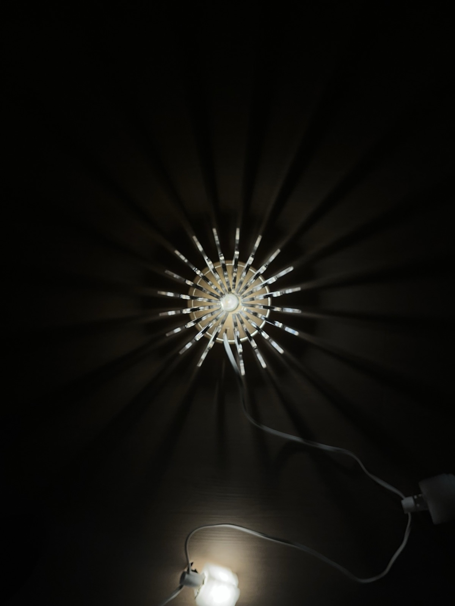

Laser Lamp: Diffusing Light Through Repeated Acrylic Ribs
Overview
I designed and fabricated this lamp on my own, from CAD model to final assembly. The structure is built from two fit pieces and twenty repeated leg pieces that slot into them, all laser-cut from acrylic. The repeated legs diffuse the light and give the lamp its shape,an exploration of how a single repeated part, cut with precision, can build something structural and organic at the same time.
Design & Fabrication
The design started in AutoCAD, where I modeled the two fit pieces that anchor the structure and a single leg shape repeated twenty times around them. Once the model was finalized, I laser-cut all twenty-two pieces from acrylic.
CAD models in AutoCAD
Laser-cutting the acrylic pieces
Getting the Legs Right
My first pass used 1/8 inch acrylic for the legs. The fit pieces fit exactly as designed, but the legs themselves were too flimsy,some broke while I was fitting all twenty into place. I switched to 1/4 inch acrylic for the legs, and the thicker material held up through assembly while still fitting the fit pieces exactly as intended.
Turning on the finished lamp


Takeaway: A repeated part is only as strong as its thinnest dimension. Moving from 1/8 inch to 1/4 inch acrylic was a small material change, but it was the difference between a fragile prototype and a lamp that held together through assembly.